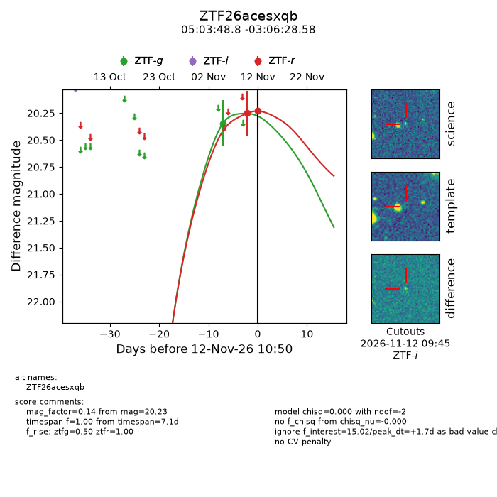
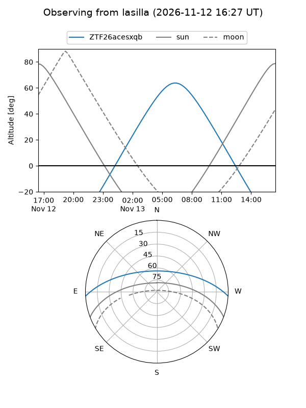
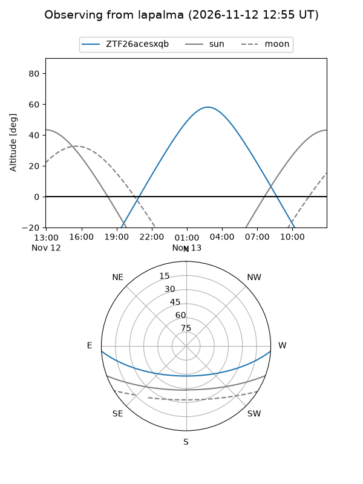
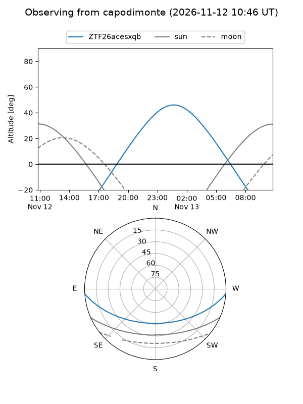
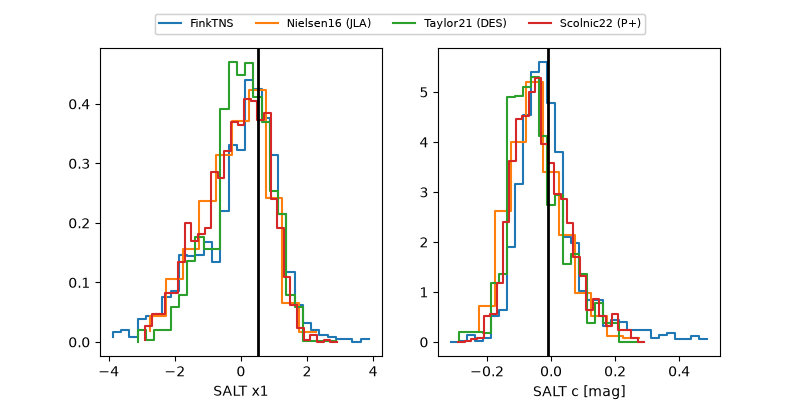

ZTF26acesxqb
Target ZTF26acesxqb at 2026-11-12 10:52
Aliases and brokers:
FINK-ZTF: ztf.fink-portal.org/ZTF26acesxqb
Lasair-ZTF: lasair-ztf.lsst.ac.uk/objects/ZTF26acesxqb
ALeRCE-ZTF: alerce.online/object/ZTF26acesxqb
Direct TNS query: direct search
alt names
ZTF26acesxqb (ztf,fink_ztf)
Coordinates:
equatorial (ra, dec) = 75.9534,-3.10794
equatorial (HMS+DMS) = 05:03:48.83,-03:06:28.58
galactic (l, b) = (202.8832,-25.26939)
Flags:
peak dt: +1.7
Photometry:
last ztfg=20.34, ztfr=20.23
1 ztfg, 2 ztfr detections
Lightcurve

Visibility



Additional plots
